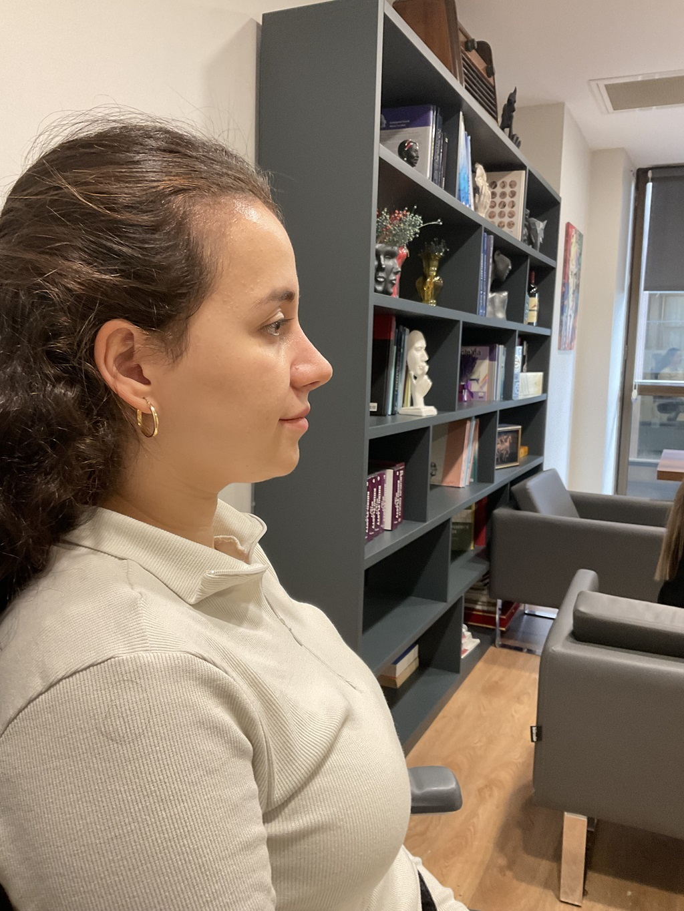
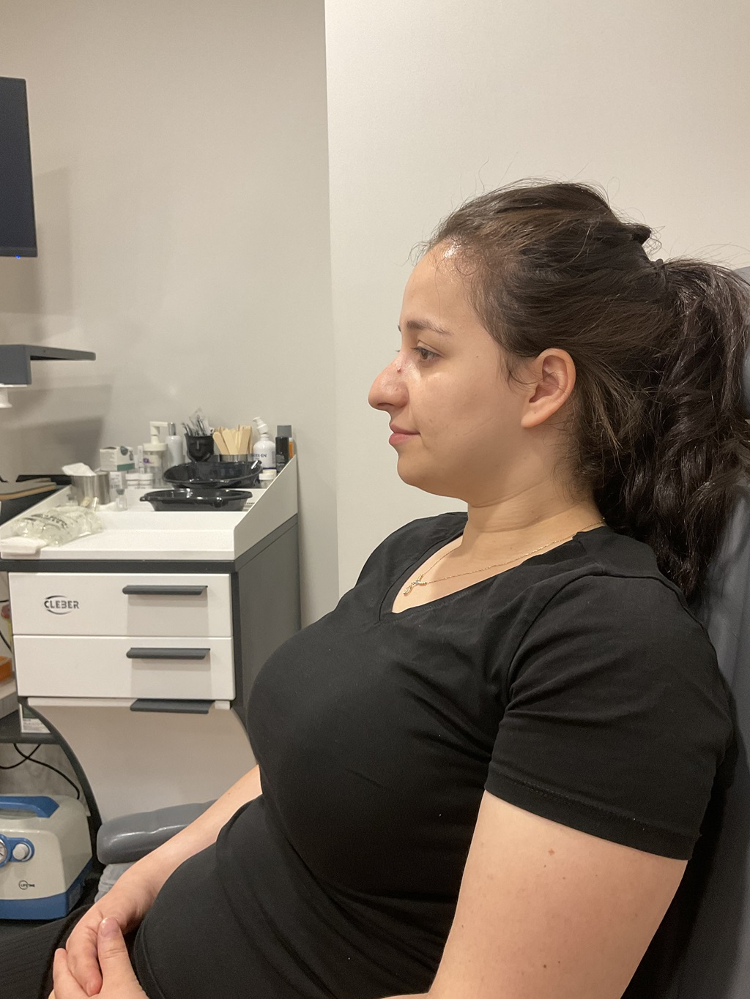
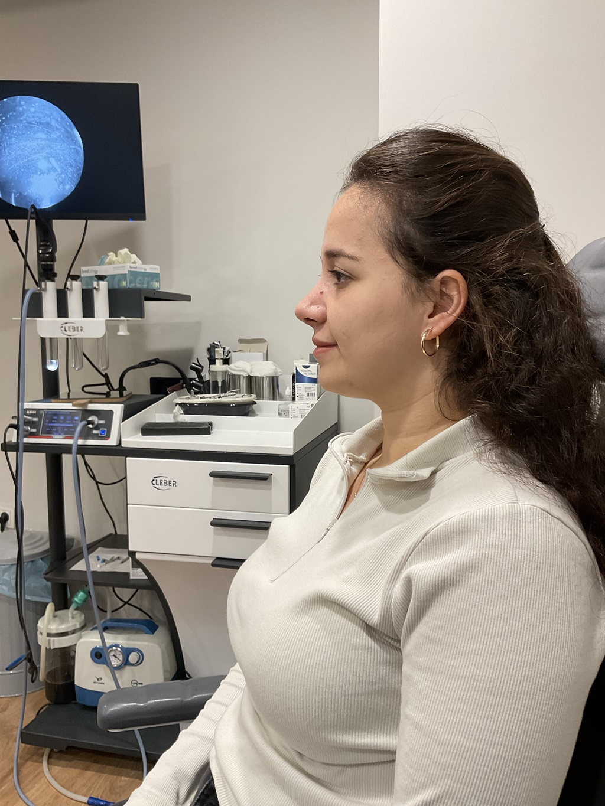
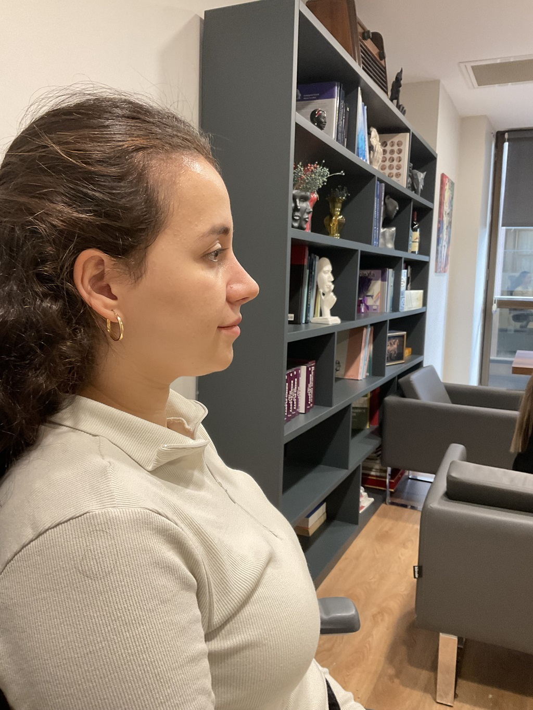
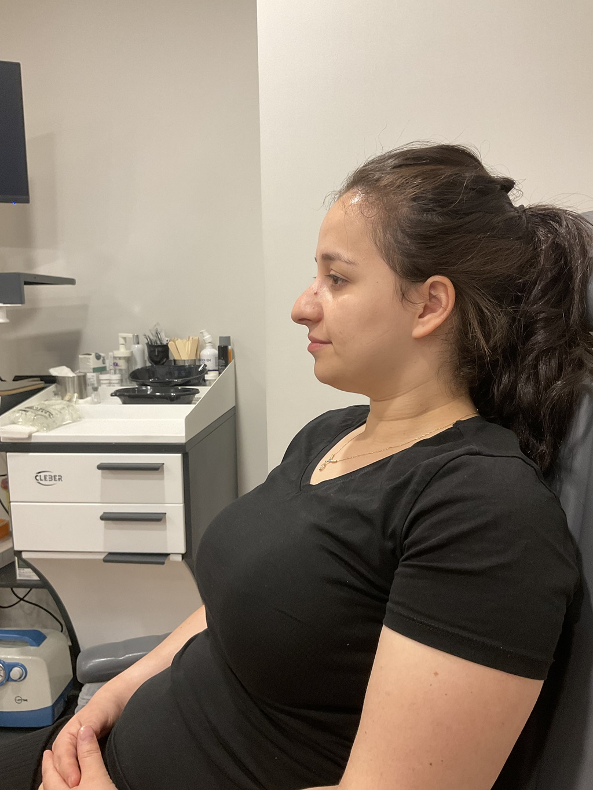
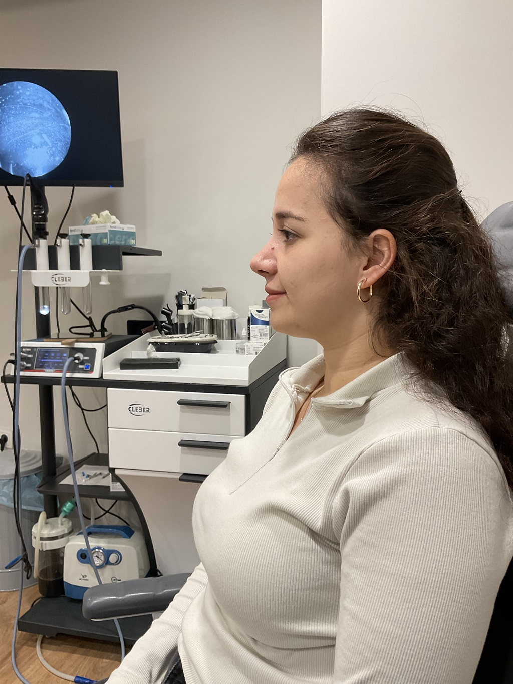

Op. Dr. Burak Bayraktar, 1977 yılında Bartın’da doğmuştur. Eğitim hayatına, 1996 yılında İstanbul Saint Joseph Fransız Lisesi'nden mezun olarak başlamıştır. Ardından, 2004 yılında Cerrahpaşa Tıp Fakültesi'nden mezun olmuş, tıp alanındaki eğitimini tamamlamıştır. 2010 yılında, Dokuz Eylül Üniversitesi Tıp Fakültesi'nde Kulak-Burun-Boğaz (KBB) uzmanlık eğitimini başarıyla tamamlayarak uzmanlık alanında derinlemesine bilgi edinmiştir. Zorunlu hizmetini Muş Devlet Hastanesi’nde yerine getiren Bayraktar, 2012-2020 yılları arasında Özel Rumeli Hastanesi'nde Kulak Burun Boğaz Uzmanı olarak görev yapmıştır. 2020 yılı itibariyle ise kendi özel muayenehanesinde hasta kabul etmeye başlamıştır.
Eğitim Hayatı
- Saint-Joseph Fransız Lisesi, 1996
- Cerrahpaşa Tıp Fakültesi, 2004
- Dokuz Eylül Üniversitesi Tıp Fakültesi (Kulak-Burun-Boğaz Uzmanlık Eğitimi), 2010
Üye Olduğu Dernek & Kuruluşlar
- Türk Tabipler Birliği
- Ulusal KBB & BBC Vakfı
- Ulusal Yüz Plastik Cerrahi Derneği


 




